Historia
La National Basketball Association (NBA) nace en 1946 (llamada BAA hasta 1949) como complemento del mayor espectáculo americano de la época, el hockey sobre hielo, mientras éste atravesaba su parón invernal. Para entonces ya existía una liga profesional, la NBL, la cual se fusionó con la BAA (fundada en 1946) en 1949 para dar nacimiento a la NBA. El primer encuentro de la liga corresponde a un New York Knicks – Toronto Huskies. Philadelphia Warriors fue el primer campeón y George Mikan el primer gran dominador con 5 anillos con Minneapolis Lakers. En 1955, Bob Pettit se convertiría en el primer MVP de la temporada y Chuck Cooper en el primer jugador de raza negra elegido en el draft. Con los finales de 50 y 60 irrumpen los Celtics de los 11 anillos liderados por Bill Russell (récord individual) y Red Auerbach. Russell y Wilt Chamberlain protagonizaron una de las rivalidades más grandes de la historia. Wilt llegó a encestar 100 puntos en un encuentro y es valedor de muchos récords en la liga. Con el ocaso de estos, en 1969 surge un nuevo dominador, Lew Alcindor, quien más tarde adoptaría el nombre de Kareem Abdul-Jabbar, máximo anotador en la historia.
En 1968 nace la ABA con el objetivo destronar a la NBA por medio de unas reglas encaminadas a crear todavía más espectáculo, pero que debido a la aplastante superioridad de la NBA terminaría por desaparecer en 1976. Dejó un legado en la NBA de 4 franquicias (Denver Nuggets, Indiana Pacers, New York Nets y San Antonio Spurs). Los años 1970 fueron de los modestos, no hubo un dominador claro y hasta 8 equipos diferentes se alzaron con el anillo. New York Knicks, uno de los 3 equipos que perduran desde el inicio, estrenó su palmarés con su primer título en 1970.
En la década de 1980 la NBA logra su momento de máximo esplendor con el ‘showtime’ de Los Angeles Lakers, dirigidos por el gran base Earvin Magic Johnson, y la eficaz sobriedad de los Boston Celtics, liderados por el gran alero Larry Bird. La eterna rivalidad Celtics-Lakers se convirtió en un clásico de las finales de la NBA. Además, el hecho de ser Bird de raza blanca y Magic Johnson de raza negra (de hecho, el equipo titular de los Celtics era de mayoría blanca y el de los Lakers era de mayoría negra) Ayudó a incrementar el morbo del duelo. A pesar de sus duelos deportivos, Bird y Magic eran (y siguen siendo) grandes amigos. De aquellos Celtics cabe destacar el pívot Kevin McHale (un juego de pies sin igual en el poste bajo), el pívot Robert "El Jefe" Parish (famoso por su dorsal 00), el escolta tirador Denny Ainge y el base anotador Dennis Johnson. Tampoco hay que olvidar que en aquel equipo llegó a jugar también Bill Walton. De los Lakers destacaron el anotador y especialista en contraataques James Worthy, el legendario pívot Kareem Abdul Jabbar, el reboteador A.C. Green y el alero tirador Byron Scott. Poco después se incorporó a este equipo el pívot Vlado Divac.
La irrupción del gran Michael Jordan, probablemente el mejor jugador de la historia de la NBA, ayudó a que el interés internacional por la NBA no decayera tras las retiradas de Bird y Magic. Jordan estuvo acompañado por varios jugadores excelentes (Scottie Pippen, Toni Kukoc), así como por especialistas en el rebote (Charles Oakley, Horace Grant) y en los triples (Steve Kerr). Además, el espectáculo que Jordan brindó junto a Dominique Wilkins o Spud Webb en los concursos de mates. permitió que el producto espectáculo de la NBA siguiera en lo más alto por varios años.
Para acabar la década, los ‘bad boys’ de Detroit Pistons dejaron su huella con 2 anillos y un estilo de juego para el recuerdo, un juego duro y agresivo basado en la defensa y ciertas "malas artes" (de ahí el sobrenombre de "bad boys") de jugadores que más parecían gladiadores que jugadores de baloncesto: el pívot triplista Bill Lambeer, el gran reboteador Dennis Rodman, y el musculado Rick Mahorn. El jugador estrella de los Pistons era el excelente base Isiah Thomas, bien escoltado por el escolta anotador Joe Dumars y, en menor medida, por el escolta suplente Winnie "Microondas" Johnson.
Michael Jordan resume en dos palabras lo que fue la década de los años 1990. Desde la época de Russell en Boston no se recordaba una superioridad tan aplastante como la que firmaron estos Bulls. Para las finales quedó el 72-10 que se marcaron en la temporada 1995-96 y sus 6 anillos. El ‘bailarín’ Hakeem Olajuwon y sus Houston Rockets aprovecharon la retirada momentánea de Jordan para apuntarse 2 campeonatos.
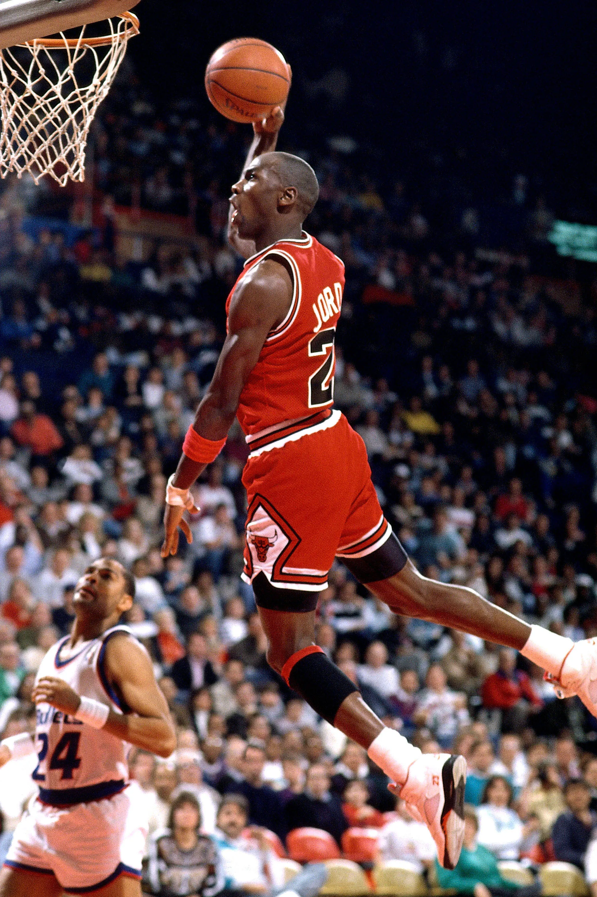La entrada del nuevo milenio viene acompañada con el ‘threepeat’ de Los Angeles Lakers. La sociedad Bryant-O'Neil aúpa a los angelinos al lugar que merecen mientras la NBA abre sus puertas al extranjero y se globaliza. Yao Ming se convirtió en el primer extranjero en ser elegido n.º 1 del draft en 2002.En 2004, los Pistons suman un nuevo anillo con el juego que le hizo grandes: con un equipo sin ningún All-Star, acabaron con el dominio de los Lakers y pusieron final a la relación Kobe-Shaq. En 2006, Dwyane Wade lideró a Miami Heat a su primer anillo; los Celtics del "Big Three original" (Pierce, Garnett, Allen) sumaban un nuevo campeonato en 2008; y los Lakers se apuntaron los títulos de 2009 y 2010 tras fichar a Pau Gasol. Mientras tanto, Tim Duncan y Gregg Popovich forjaron su leyenda con San Antonio Spurs. Durante estos años, un joven LeBron James dejó señales del dominio que ejercería en el futuro. Tras dejar sus Cleveland Cavaliers, se unió a Wade y Chris Bosh en Miami y ganó dos anillos en 2012 y 2013, aunque en 2011 cayeron contra todo pronóstico con los Dallas Mavericks de Dirk Nowitzki y en 2014 fueron los Spurs, liderados por un joven Kawhi Leonard, quienes pusieron un amargo final a la etapa del Rey en Florida. Para la temporada 2014-15, LeBron decide volver a Cleveland, pero se topó con los jóvenes Golden State Warriors de Stephen Curry. En 2016, la franquicia de Oakland firmó el mejor registro histórico en una temporada regular (73-9), pero en las finales, LeBron cobró su venganza y dio a los Cavaliers el primer anillo de su historia. En 2017, los Warriors, tras el polémico fichaje de Kevin Durant, recuperaron el cetro de la liga tras barrer a los Cavs, y también se apuntaron el título de 2018 confirmándose como un equipo de leyenda.

Conferecias
Conferecia oeste
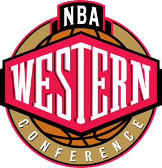La Conferencia Oeste es una de las dos conferencias, junto a la conferencia, que componen la estructura organizativa de la NBA. Fundada en 1946, ambas están compuestas por quince equipos y organizadas en tres divisiones de cinco equipos cada una.
Se llamó "Western Division" ("División Oeste") hasta 1970, cuando se renombró a ""Western Conference" ("Conferencia Oeste").
En total, por cada conferencia se clasifican 8 equipos. Los líderes de cada división se clasifican matemáticamente para disputar los playoffs, mientras que los 5 equipos restantes serán los que posean mejor balance victorias-derrotas.
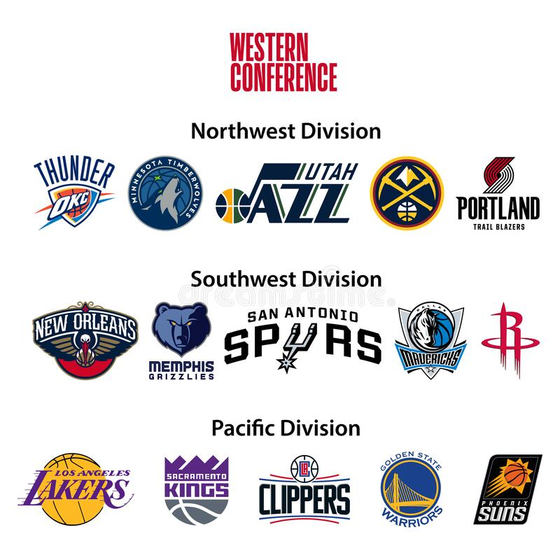Equeipos
- Warriors
- Lakers
- Jazz
- Clippers
- Mavericks
- Suns
- Nuggets
- Pelicans
- Grizzlies
- Blazers
- Kings
- Spurs
- Rockets
- Timberwolves
- Thunders
Conferecia este
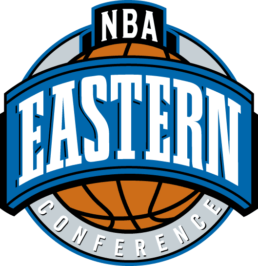La Conferencia Este es una de las dos conferencias, junto a la Conferencia oeste, que componen la estructura organizativa de la NBA. Fundada en 1946, ambas están compuestas por quince equipos y organizadas en tres divisiones de cinco equipos cada una.
Se llamó "Eastern Division" ("División Este") hasta 1970, cuando se renombró a ""Eastern Conference" ("Conferencia Este").
En total, por cada conferencia se clasifican 8 equipos. Los líderes de cada división se clasifican para disputar los playoffs, mientras que los cinco equipos restantes serán los que posean mejor balance victorias-derrotas.
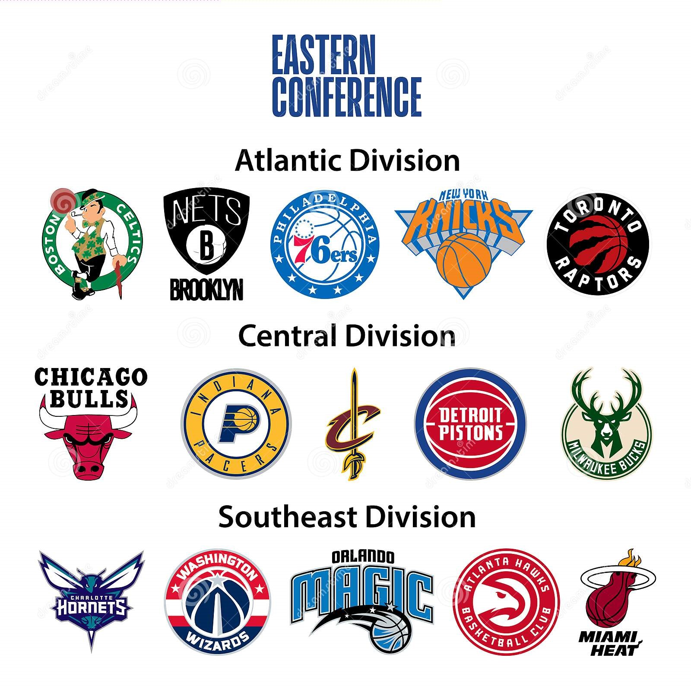Equeipos
- Celtics
- Milwaukee Bucks
- Cavaliers
- Pacers
- 76ers
- Raptors
- Wizards
- Hawks
- Nets
- Heat
- Knicks
- Bulls
- Hornets
- Magic
- Pistons
Top 7 jugadores de la historia
7. Larry Bird
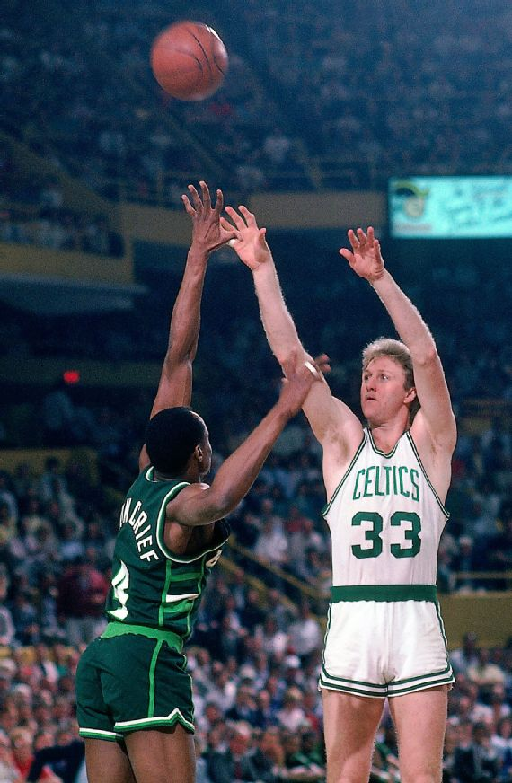1979-92 Boston Celtics
24.3 PPJ, 10.0 RPJ, 6.3 APJ, 1.7 robos PJ
Bird, junto a Magic Johnson, revitalizó a la NBA (y la rivalidad entre Celtics y Lakers) gracias a una combinación increíble de precisión en las cestas, habilidad con los pases e intelecto de baloncesto. Lideró a la franquicia de Boston en la obtención de tres campeonatos y sus tres premios consecutivos al Más Valioso entre 1984 y 1986 representan una hazaña sólo comparable en la historia de la NBA con los méritos de Chamberlain y Russell. Hasta la incursión de LeBron James, el nativo de Indiana era universalmente considerado como el mejor alero de todos los tiempos.
6. Wilt Chamberlain

1959-62 Philadelphia Warriors, 1962-65 San Francisco Warriors; 1965-68 Philadelphia 76ers; 1968-73 Los Angeles Lakers
30.1 PPJ, 22.9 RPJ, 4.4 APJ
Chamberlain fue un atleta con un talento tan superior que rayaba en lo cómico. Fue un jugador que verdaderamente se adelantó a su era con creces. Sus estadísticas (incluyendo su récord de la NBA de 100 puntos anotados en un mismo partido y su promedio de 50 tantos por encuentro en una sola temporada) son míticas. La única razón por la cual "The Big Dipper" no se ubica en un puesto más alto en los rankings de los jugadores más grandes de todos los tiempos es que Chamberlain "apenas" ganó dos campeonatos de la NBA.
5. Bill Russell
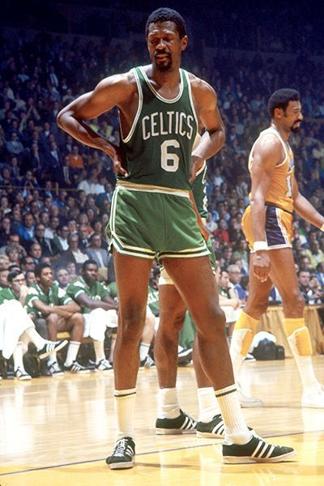1956-69 Boston Celtics
15.1 PPJ, 22.5 RPJ, 4.3 APJ
Russell, quien fue el más grande ganador de la historia del baloncesto, se alzó con 11 títulos en un lapso de 13 años, mientras convertía a los Boston Celtics en una súper potencia defensiva, prácticamente por sí solo. La agudeza de Russell a la defensiva y su determinación lo convirtieron en el antagonista perfecto de Wilt Chamberlain. Russell fue uno de los pocos jugadores de su época que no habría parecido obsoleto en eras futuras. Sus habilidades le ayudaron a obtener cinco premios al Más Valioso y 11 selecciones al equipo All-NBA.
4. Magic Jhonson
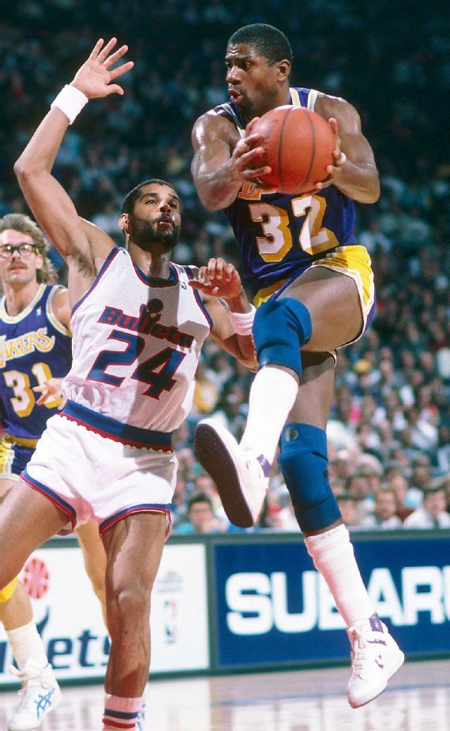1979-91, 1996 Los Angeles Lakers
19.5 PPJ, 7.2 RPJ, 11.2 APJ, 1.9 robos PJ
Johnson, quien cuenta con argumentos para ser considerado el base y líder sobre la cancha más grande de la historia, revolucionó el mundo del baloncesto, incursionando en la NBA como el base de mayor estatura en la historia de la liga hasta ese entonces, con 6 pies y 9 pulgadas. Fue un ganador legendario, un pasador trascendental, una jugada destacada lograda al instante y constante amenaza de triple-doble. Sin la presencia de Johnson y su histórica rivalidad con Bird y los Boston Celtics, es probable que la NBA no se encontrara en el sitial que hoy ocupa en el panorama deportivo. El carismático Johnson definió a los Lakers de la era "Showtime" y sus quiebres rápidos y pases sin mirar catapultaron a la NBA, de una era en la cual los partidos de las Finales no se transmitían por televisión hasta convertirse en el deporte global que es hoy.
3. Kareem Abdul-Jabbar

1969-75 Milwaukee Bucks; 1975-89 Los Angeles Lakers
24.6 PPJ, 11.2 RPJ, 3.6 APJ
Ningún jugador en la historia de la NBA puede igualar el largo historial de excelencia alcanzado por Abdul-Jabbar. El pívot ganó la cifra récord de seis premios al Más Valioso de la NBA y fue All-Star en 19 oportunidades, alzando seis campeonatos (con 17 años de distancia entre el primer y último títulos), aparte de 15 selecciones al equipo All-NBA, incluyendo 10 al primer equipo. Su indetenible gancho "skyhook" le permitió anotar más puntos que cualquier otro jugador en la historia de este deporte y si bien su estilo no era ostentoso, se puede decir que no hemos visto a nadie mejor.2. LeBron James
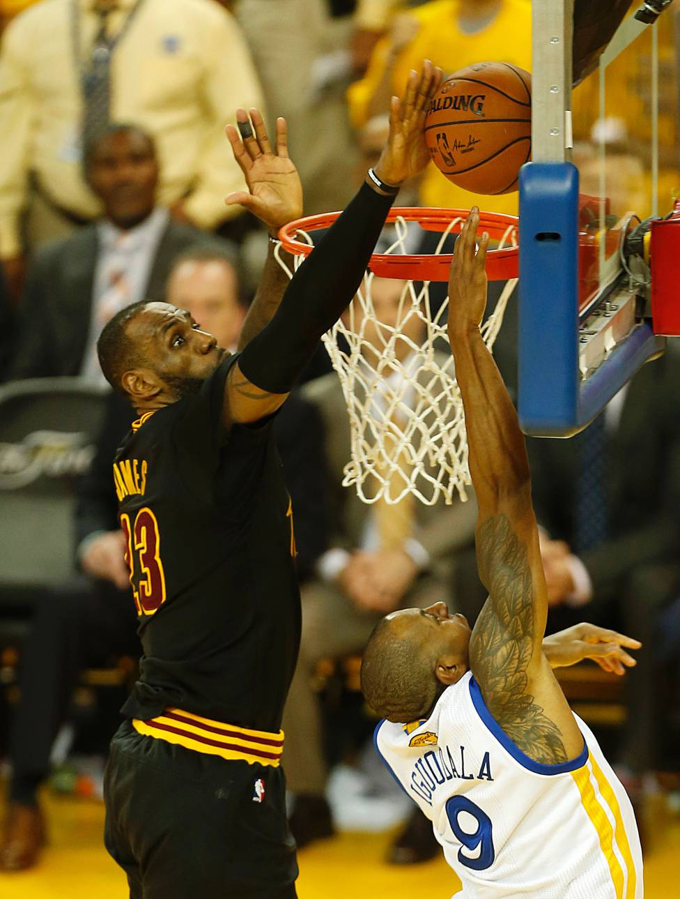2003-10, 2014-18 Cleveland Cavaliers; 2010-14 Miami Heat; 2018-20 Los Angeles Lakers
27.1 PPJ, 7.4 RPJ, 7.4 APJ, 1.6 robos PJ
Con 2,06 metros de estatura y con un peso superior a los 113 kg, el juego de James está basado en su poder; no obstante, su peculiar habilidad con los pases podría ser su habilidad más fuerte. James, premiado en cuatro ocasiones como Más Valioso y tres veces campeón, ha reinventado la forma en la cual definimos el apogeo de condiciones físicas de un jugador, siendo capaz, a sus 35 años, de conducir a Los Angeles Lakers para meterse en la lucha por el título, en su temporada número 17 en la NBA. Su bloqueo en el Juego 7 de las Finales de 2016, que ayudó a sellar la remontada 3-1 contra unos Golden State Warriors que sumaron 73 victorias en la campaña regular, resumirá por siempre sus habilidades ultra-atléticas y sed de triunfos.
1. Michael Jordan

1984-93, 1995-98 Chicago Bulls; 2001-03 Washington Wizards
30.1 PPJ, 6.2 RPJ, 5.3 APJ, 2.3 robos PJ
El jugador más grande de todos los tiempos. Jordan lideró a los Chicago Bulls hasta alcanzar seis campeonatos de la NBA, seis premios al Más Valioso de las Finales, cinco reconocimientos al Más Valioso de la temporada regular, mientras se convertía en todo un ícono mundial, dentro y fuera de la cancha. El genio de Jordan, a ambos lados de la cancha, definió el baloncesto para una generación, imponiéndose como referente de los jugadores del futuro, que intentan seguir sus pasos. Su juego trascendió al deporte.
All star

El All-Star Game de la NBA es un partido de carácter amistoso que se celebra durante el All-Star Weekend de la NBA, en el que participan solo los mejores jugadores de cada año, divididos en dos equipos que representan a cada conferencia (Este y Oeste). El objetivo principal del partido es dar espectáculo, por ello se celebran también el mismo fin de semana un concurso de habilidades, de triples y otro de mates.
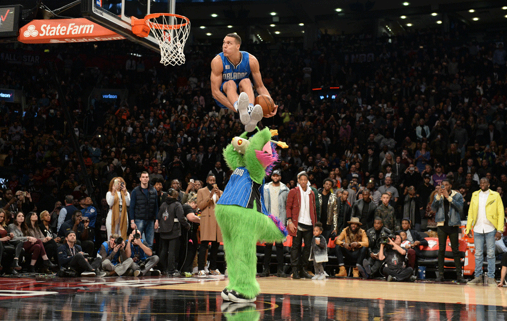El primer All-Star Game se celebró en el Boston Garden el 2 de marzo de 1951. Desde entonces, se han reunido los mejores jugadores de la historia en un partido para el entretenimiento.
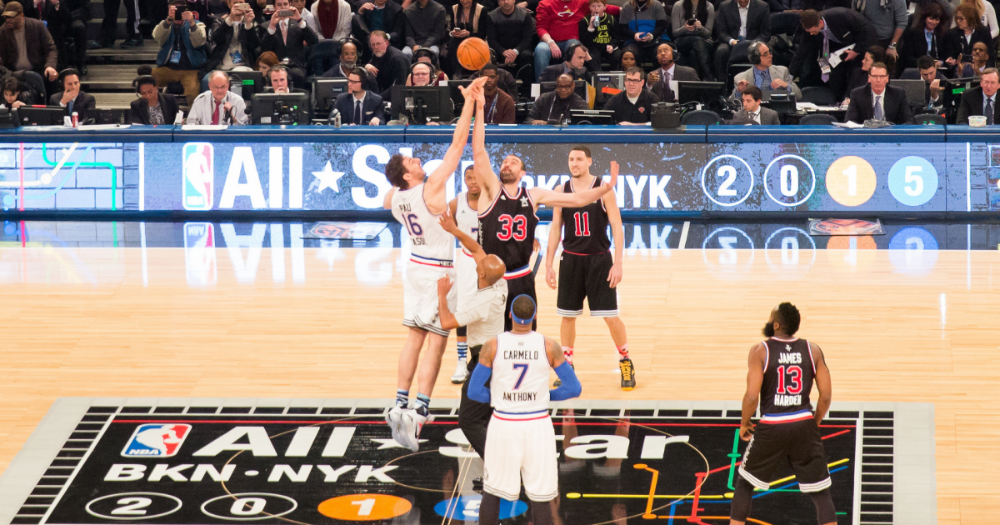Camisetas
Aquí les dejamos un top de las camisetas más vendidas en la historia de la NBA
5. Boston Celtics 1985-86
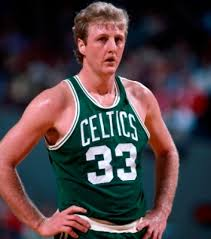4. Los Angles Lakers 1996-97
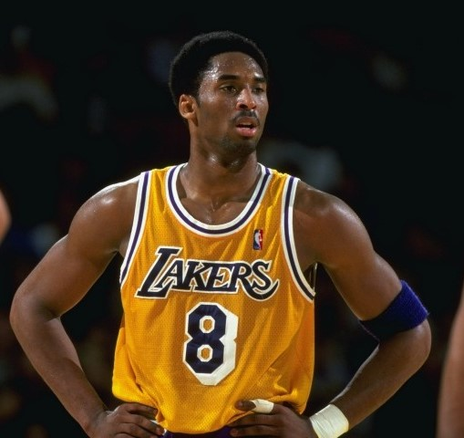3. Philadelphia 76ers 2000-01
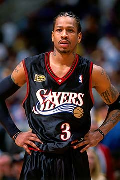2. Chicago Bulls 1995-96
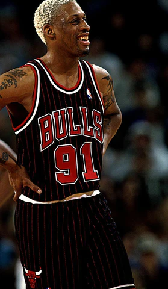1. Toronto Raptors 1995-96
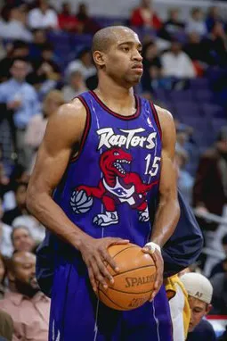Mejores jugadas de la decada
Aquí les dejamos un video con las 100 mejores
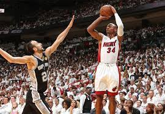